Setup
- The 30 city tokens are shuffled well and displayed on the game board with their alphabetical characters face up. (the “D” city tokens are not used on the Italia board)
- The city tokens are randomly assigned to the cities on the board according to their characters.
- The tokens are flipped so that their type of goods becomes visible.
For every province the most valuable type of goods is identified. The value of cloth is 7, of wine 6, of tools 5, of food 4, and of bricks 3. A bonus marker of that type is assigned to the respective province inside the bonus markers section on the top left corner of the game board. In this example the provinces of Asia and Syria already have face up city tokens. As the most valuable good in Asia is tools, and in Syria cloth, both provinces receive the appropriate bonus marker of those types on the game board. The other 10 provinces are treated in the same manner as well.
3. Prepare the stack of cards- The 30 cards for sale are arranged according to their Roman numeral on the back (I-V).
- Cards with a numeral bigger than the number of players are taken out of the game (for instance, with 3 players take out cards with IV and V). The other cards are sorted by numeral and shuffled well. Finally the cards form one complete face down stack; beneath them the I cards on top, then the II cards, etc.
- The top 7 cards from stack are displayed face up inside the display area on the top right corner of the game board. The remaining stack is put near the game board, along with the CONCORDIA card.
Each player places one land and one sea colonist into “Roma” and the scoring marker onto the scoring track at Zero. In addition all players place 2 land and 2 sea colonists each into their own storage spaces inside their storehouses as well as 6 units of goods: 2 food, 1 cloth, 1 wine, 1 brick, and 1 tool. Now 10 of the 12 storage spaces are occupied. They take the 15 wooden houses of their color into their supply and their 7 starting cards into their hand. The start player is determined randomly and receives 5 sesterii, the 2nd player 6 sesterii etc. as their starting money. The PRAEFECTUS MAGNUS is assigned to the last player in player order. (The player setup is also shown on the back of the storehouses)
Board Elements ProvincesLybia is one of 12 provinces. Each province has 2 or 3 cities. (ITALIA has only 11 provinces)
LinesLines connect all cities: brown lines for land colonists, and blues lines for sea colonists. Each line can be occupied by only one colonist at a time.
Expansion Setup (Concordia Salsa)Players choose a scenario (Italia, Imperium, Hispania, or Byzantium). When playing with the expansion, set up the Forum tableau. Deal one Patriot (blue) card to each player. Note that the start cities for the new maps are different: the start city for Byzantium is Byzantium, and the start city for Hispania is Saguntum. These two start cities similarly replace Roma in the text of the personality cards Tribune and Colonist. The setup differences are described in detail on the back side of the Forum tableau.
Core Concepts
Each player has a storehouse with 12 storage spaces. Each space may house either one colonist or one unit of goods. At the beginning of the game, 4 storage spaces are occupied by colonists and therefore are not available for housing goods. However, if a player places new colonists on the game board, additional storage spaces become available. If all spaces are occupied in one way or another, no more units of goods can be taken in. It is not allowed to discard goods in order to make room for other ones instead. If a player receives plenty of goods without having enough empty storage spaces, it is allowed to choose which specific units of goods he wants to take, but not to leave any storage spaces empty.
Salt (Expansion)
Salt is, like any other good, stored in the storehouse. Salt is a wildcard, which means you can exchange salt with any other good at any time. But you can never buy or sell salt for sestertii. You get salt when your Salt cities produce or through some of the Forum cards.
Trade and StockpilePlayers are not allowed to trade goods with each other. Goods and coins are considered to be unlimited. The number of colonists is restricted to 6 per player.
Expansion Note: The game also includes 27 Forum cards.
Praefectus MagnusIf a player who currently owns the PRAEFECTUS M. plays a Prefect card (or uses one with the Diplomat) in order to let a province produce, he receives a double bonus (2 units instead of 1). Production inside the cities is not affected. After his turn he hands the PRAEFECTUS M. to the player sitting to his right. A player must use the PRAEFECTUS M. when able and may not choose to forego its benefit to keep it for later. But if a player plays a PREFECT card in order to receive the cash bonus, the PRAEFECTUS M. is not activated and remains with the player: it is not allowed to double the cash bonus.
Personality Cards
The player recovers all of his previously played cards back into his hand. If the player takes back more than 3 cards (including the Tribune in the count), he receives 1 sestertius per card past the 3rd from the bank.
2. 1 new colonistIn addition the player may optionally purchase 1 new colonist by paying 1 food and 1 tool to the bank and placing either a new land or sea colonist from his storehouse into the Start City (Base game: Roma).
3. Acquire a Forum Card (Expansion)When a player plays the Tribune, they can take exactly one of the 4 displayed Forum cards for free. But they need a minimum number of already played personality cards (including the Tribune). The necessary number of played personality cards is shown on the forum directly under the card. With 10 or more played personality cards the player has the choice between all four cards. With 8 or 9 personality cards they can choose between the first three forum cards and with 6 or 7 between the first two forum cards. With 4 or 5 personality cards they can only take the first card. Afterwards the remaining forum moves to the left; the free place on the right is filled from the stock. If the stock is empty, the discarded forum cards are shuffled again.
Architect 1. Move colonistsExample:
A player who until now has played 4 cards now plays his TRIBUNE card. Therefore he takes a total of 5 cards back into his hand and receives 2 sestertii from the bank. In addition he decides to build a new colonist. He pays 1 food and 1 tool to the bank and places the new colonist inside ROMA on the game board. The colonist discovers one new storage spot for goods inside his storehouse.Expansion Example:
The player plays the Tribune. Including the Tribune they have 7 personality cards played in front of them. They can therefore choose one of the first two Forum cards (QUINTUS or APPIUS ARCADIUS). Afterwards they conduct their Tribune actions.Expansion Example:
A player plays the Tribune. They own 1 food and 1 salt, but no tool. The player exchanges the salt for 1 tool, hands the 2 goods over and places a new colonist on the game board.
The number of colonists a player has on the board determines the number of possible movement steps that a player can freely allocate to his own colonists. Land colonists are moved only along the brown lines and sea colonists only along the blue lines. A colonist’s first movement step is out of his starting city onto an adjacent line. Any further steps will move the colonist through a city and onto the next adjacent line to that city. At the end of his movement, a colonist cannot be placed on a line that is already occupied by another colonist. However, a colonist is allowed to move through occupied lines, adding the occupied sections passed through into his movement count.
2. Build houses (after all movements)The player may build houses in cities adjacent to any of his own colonists. Each new house built in a city is paid with goods and coins to the bank. The cost in goods is 1 food in a brick city, or 1 brick plus the good of that city type in every other city. The cost in coins is 1 sestertius in a brick city, 2 sestertii in a food city, 3 in a tool city, 4 in a wine city, and 5 in a cloth city.
If a new house is built in a city where there are already other houses, the cost in coins is multiplied by the number of houses that will be in the city after this build (i.e., to build the fourth house in a city the cost in coins is multiplied by 4). The cost in goods remains the same. Players may not build more than 1 own house in a single city and never in the Start City (Base game: Roma).
Expansion Rule (Salt Cities)
A Salt city costs 1 tool + 1 wine + 5 sestertii (+ 5 additional sestertii for every house which is already in the city).
Expansion Rule (Forum Cards)
Forum cards may be played before the building action, but the building action of the Architect cannot be interrupted by the play of a Forum card. That means: "Moving - Forum card - Building" is allowed; but "Building - Forum card - Building" is forbidden.
PrefectExample:
Red has 3 colonists, 1 land colonist is located between "Colonia A." and "Novaria", and the other 2 are still in "Roma". Therefore he has 3 movement steps available. The black arrows show how he allocates his movements to his colonists. The sea colonist from "Roma" moves onto the sea line to "Massilia" (1 step), and the land colonist makes 2 steps onto the line between "Aquileia" and "Vindobona".After moving his colonists he may build houses. All in all there are 5 cities adjacent to his colonists. But as he already owns a house in "Colonia A." only 4 remain where he could build. He has enough goods and cash to build 3 new houses. He builds a house in "Massilia" (5 sestertii, 1 cloth, and 1 brick), in "Novaria" (4 sestertii, 1 wine, and 1 brick) and in "Aquileia" (6 sestertii, 1 food, and 1 brick). A house in a food city basically costs only 1 brick, 1 food, and 2 sestertii, but as "Aquileia" already has 2 houses the cash price is tripled. He pays the goods and sestertii to the bank and puts 3 new houses into the cities.
Expansion Example:
Red plays the Architect. They already moved their colonists and want to build now. In their storehouse red possesses 1 brick and 2 units of food. Furthermore they own the 3 pictured Forum cards on the right. First red exchanges with AUGUSTUS 1 brick and 1 food with 2 salt. Then they play MAMILIUS and do no longer need any bricks in the following building action. Finally red uses ANNAEUS ARCADIUS, so that they can build in the wine city, too. Altogether red builds in the 3 pictured cities and pays 2 salt (as a wildcard for 1 cloth and 1 wine), 1 food and 15 sestertii. The two citizens (AUGUSTUS and MAMILIUS) have to be discarded.
The player chooses between two alternatives:
a) The player chooses a province where the houses produce goods. He can only choose an active province whose bonus marker (province tile) still shows the goods symbol. It is not necessary that the player (or any other player) owns a house in the chosen province. He flips the bonus marker of the province to its coin side and receives 1 unit of the goods type depicted on the bonus marker out of the bank. In addition all houses inside the province, regardless of their owner, each produce one unit of the goods produced in that city.
or
b) Instead of producing the player may choose to collect the cash bonus. For every visible coin on the bonus markers he receives 1 sestertius from the bank. Afterwards all bonus markers are flipped back to the side showing their good’s symbol.
Expansion Note: Some Forum cards modify or trigger off the Prefect action.
ColonistExample:
Syria is able to produce because its bonus marker still shows the good's symbol. Red plays the Prefect card, chooses Syria, and receives a bonus of 1 cloth as shown on the bonus marker. The Syrian bonus marker is now flipped over to its coin side and all houses in Syria produce: Red and Blue receive 1 food each, and Yellow receives 1 cloth.In the situation depicted down to left the player who chooses the cash bonus would get 6 sestertii out of the bank, because there are 6 coins visible on the bonus markers (given that no other bonus markers show coins) and the bonus markers with coins would be turned over to show their units of goods again.
The player chooses between two alternatives:
a) The player may place new colonists on the game board each to be paid for with 1 food and 1 tool. New colonists can be placed inside the Start City (Base game: Roma) or inside any other city where the player owns a house.
or
b) The player receives 5 sestertii plus 1 sestertius for each of their own colonists on the game board.
MercatorExample:
Red has 2 food and 3 tools in his storehouse and plays the COLONIST card. Paying 2 food and 2 tools he places 2 colonists. He decides to place a new sea colonist in "Roma" and a new land colonist in "Massilia". He could also have chosen to place one colonist in "Aquileia" instead, but not in "Novaria" because he has no house there (obviously, only a land colonist would be reasonable in "Novaria"). Or he could even place 2 colonists in the same city.
This turn is executed in 2 steps:
- The player receives 3 sestertii out of the bank (or 5 sestertii with a purchased Mercator).
- He may then trade in two types of goods with the bank. This means he may sell two buy two types, or sell one type and buy another. The number of units he may sell and/or buy is only limited by the free single unit space inside his storehouse, where every single unit occupies one storage space. The trade is done at fixed prices, which are shown on the roof of the storehouses.
Expansion Note: While Salt is a good, it cannot be bought or sold for sestertii during a Mercator action.
DiplomatExample:
Green has 2 sestertii cash and her storehouse is as depicted. She plays the Mercator card and receives 3 sestertii (It’s not a purchased Mercator). She sells 3 units of wine for 3 x 6 = 18 sestertii to the bank, so that the total cash now is 23 sestertii. For her second type of goods she wants to buy bricks. She would be able to pay for up to 7 bricks, but there are only 5 storage spaces available in the storehouse so that she cannot buy more than 5 units. She decides to buy 4 units of bricks paying 4x3=12 sestertii. She would have loved to buy a unit of food, but that is not allowed as she has already traded in two different types of goods.
The player executes an action from a personality card that is on top of another player’s discard pile and thus is displayed face up in front of them. The action is executed the same as if the player had played that card himself. Actions of players who recently used a Diplomat card or took back their cards into their hand with their Tribune cannot be copied.
Example:
The picture shows the personality cards recently played by the other 4 players. The 5th player plays a Diplomat card. He now may either execute the action of a Senator, an Architect, or a Prefect.
Note
We apologize for a misprint on the Diplomat card in deck IV. The cost is tools, as depicted by the symbol.
SenatorThe player may purchase up to two personality cards from the display on the game board and take them into his hand. The price of a card is the sum of the goods depicted inside the red field of the card plus the goods depicted beneath the card’s position on the game board, where a question mark stands for a good of the player’s choice.
After the purchase(s), all remaining personality cards inside the display move to the left if their left position is empty, and the display is replenished to the new total of 7 cards (as long as there are fresh cards inside the stack).
ConsulExample:
The picture shows the cheapest 4 personality cards on sale. The player wants to purchase the Mercator and the Architect card. It costs 1 unit of wine for the Mercator card, and 1 tool and 1 brick for the Architect card to the bank. Instead of a brick he could have paid with any other type of goods as the question mark allows a free choice of payment. He takes the Mercator and the Architect card into his hand. Now the Prefect card moves by 1 and all other remaining cards by 2 positions to the left. Finally the 2 free spots on the display are replenished with 2 new cards from the stack. (The Farmer would have cost 1 brick, 1 food, and 1 cloth).
The player may purchase one personality card from the display on the game board and take it into his hand. The price consists only of the goods depicted inside the red field of the personality card. Any goods depicted beneath the card’s position on the game board are ignored. As with a Senator, the remaining personality cards inside the display move to the left if their left position is empty, and the display is replenished from the stack (as long as the stack exists).
SpecialistsExample:
The player wants to purchase the Colonist card, which is located in 6th position inside the card’s display. He pays only 1 unit of food because the goods depicted on the game board are ignored (1 unit of free choice plus 1 cloth). But he cannot purchase more than 1 card. He takes the Colonist into his hand and the Prefect card moves one position to his left. The former position of the Prefect is replenished with a new card from stack.
(Mason, Farmer, Smith, Vintner, Weaver)
All the player’s houses of the related type of goods produce one unit each.
Expansion Note: Salt cities interact with specialist cards during production and scoring. When scoring Specialist cards, a Salt city counts as exactly one type of good of the player's choice.
Example:
The player has a total of 4 houses inside wine cities and plays the Vintner. She receives 4 units of wine and puts them on 4 empty storage spaces inside her storehouse. The other players do not receive any goods.
Forum Cards
The 27 Forum cards divide into 13 Patriots (blue) and 14 Citizens (green). The blue Patriots are permanent cards, which means they stay the whole game at the owner’s side. Conversely, the green Citizens offer a one-time advantage. After their use you must discard them.
The players start the game with one Patriot (see game setup on the back of the Forum tableau).
Use of Forum CardsFundamentally a player can use and combine as many Forum cards in their move as they like. However the following points have to be respected:
- Many forum cards can only be used in combination with the appropriate personality card. Example: CLAUDIUS POMPEIUS can only be used with the Prefect.
- Patriots (blue) remain with the players, Citizens (green) have to be discarded after use.
- If you get goods by playing a forum card, you have to store these goods in your storehouse. After that you can immediately use the new goods.
- The building action of the Architect cannot be interrupted by the play of a Forum card. That means: "Moving - Forum card - Building" is allowed; but "Building - Forum card - Building" is forbidden.
- Newly obtained Forum cards may be used in the same move.
To make the best out of the different Forum cards and starting with a forum card that you do not particularly like is one of the many challenges in Concordia Salsa. If you prefer a more balanced start, you can distribute the forum cards with the following auction variant: Display “number of players +1” blue Forum cards. The starting player bids at least 0 victory points for one of the cards. All players can then in order bid higher or pass, until everyone has passed. The winner of the auction gets the forum card and spends the victory points that were bid by going backwards on the victory point track. Players who already own a forum card cannot participate in further auctions. The auctions continue until everybody has a forum card. (If the starting player is not present, the second player starts the bidding and so on.) The last player without a forum card takes one of the last two cards for 0 victory points and discards the other.
Intermediate Scoring & Game End
If a player plays his Tribune card for the first time in the game in order to take his cards back into his hand, he immediately performs a personal intermediate scoring. He scores all his cards as described below for the final scoring, and tallies his VP on the VP-track.
After all players have played their Tribune card for the first time and have received the intermediate scoring, these scores are compared and player with the highest score receives 2 sestertii. Second place receives 1 sestertius. If players share the same position, they all receive the same amount (all in 1st place receive 2 sestertii and all in 2nd place receive 1 sestertius). After that, all scoring markers move back to the zero position on the VP-track.
NoteWe do not recommend performing intermediate scoring if all players know the game well.
Game EndIf a player purchases the last personality card and such empties the display on the game board, or if he builds his 15th house, he receives the Concordia card, which is worth 7 additional VP. Every other player now executes his last turn before the final scoring is done as described below.
The player with the most VP wins the game. A tie is won by the player owning PRAEFECTUS MAGNUS, or by the tied player who would receive him next in the course of the game.
Final Scoring
Each personality card is related to an ancient god who rewards its owner with victory points. First players gather all their cards, including the ones from their discard pile, and arrange them according to the different ancient gods. The back of the player aid shows a summary of the gods and in which order they are scored. The victory points assigned to each card that is marked with the respective god are described in the following text. All victory points (VP) are tallied with the player’s score marker on the VP-track. It is recommended to first score VESTA for all players, then Jupiter etc.
VestaThe value of all goods in the storehouse (usual price as depicted) is added to the cash money. Then the player receives 1 VP per full 10 sestertii, any fractions are ignored.
JupiterFor each house inside a non-brick city the player receives 1 VP. (max. 15 VP)
Expansion Note: Salt cities count as non-brick cities and score 1 VP normally.
SaturnusFor each province with at least one of their houses the player receives 1 VP. (Imperium max. 12 VP, Italia max. 11 VP)
Expansion Note: Salt cities count for their respective provinces normally.
MercuriusFor each type of goods that the player produces with their houses, he receives 2 VP. (max. 10 VP)
Expansion Note (Attention): Salt cities do not count as a type of good for Mercurius scoring.
MarsFor each of his colonists on the game board the player receives 2 VP. (max. 12 VP)
MinervaFor each city of the related city type the player receives a certain number of VP as depicted on the specialist’s card.
Expansion Note: For Minerva (specialists) every Salt city counts for exactly one type of good of the player's choice when scoring Specialist cards.
Scoring ExamplesExample:
The player owns a total of 12 houses on the board of which 3 produce bricks, 4 produce food, 3 produce tools, and 2 produce cloth. They are distributed over 7 provinces. Furthermore the player owns 5 colonists on the game board, has a total of 13 sestertii, and owns the Concordia card because he purchased the last card from the display area on the game board. The storehouse contains 1 cloth, 3 tools, and 1 brick. After arranging the cards as shown to the right, the final scoring gives the following result:VESTA: His goods are worth 7 (1 cloth) + 15 (3 tools) + 3 (1 brick) sestertii. Added to his cash on hand (13 sestertii) he has 38 sestertii which are worth 3 VP.
JUPITER: As 3 of his 12 houses are inside brick cities, he has 9 houses that count for this god. With 2 cards assigned to Jupiter he receives 2 x 9 = 18 VP.
SATURNUS: As the player has houses in 7 provinces and owns 4 cards assigned to Saturnus, he receives 4 x 7 = 28 VP.
MERCURIUS: Unfortunately the player has not built inside a wine city, but he does produce the other 4 types of goods. For his 2 cards assigned to Mercurius he receives 2 x 8 = 16 VP.
MARS: For his 5 colonists on the game board he receives 10 VP per card assigned to Mars, hence 3 x 10 = 30 VP.
MINERVA: The player owns a farmer who rewards him with 3 VP for each house inside a food city. With 4 such houses this results in 12 VP.
Together with 7 points from the Concordia Card the player therefore achieves 114 victory points.
Expansion Example:
At the end of the game a player possesses 2 MINERVA cards, Vintner and Mason, and the following cities: 3 Salt cities and 2 brick cities. The Vintner yields 4 victory points for every wine city. The player therefore counts their Salt cities as wine cities. They get 3x4 = 12 victory points for the Vintner and 2x3 = 6 victory points for the Mason.
Expansion: Maps
Start city for BYZANTIUM is Byzantium.
Start city for HISPANIA is Saguntum.
These two start cities similarly replace Roma in the text of the personality cards Tribune and Colonist.
List of Cities BYZANTIUMALEXANDRIA Alexandria
AMASTRIS Amasra
ANCYRA Ankara
ANTIOCHIA Antakya
APOLOONIA Sozopol
APPIA Pinarik/Kithyara
ATHENAE Athens
ATTALIA Antalya
BYZANTIUM Istanbul
CAESAREA Kayseri
CHERSONESUS Cherson
CYRENE Sharhat
DELPHI Delphi
GAZA Gaza
GORTYN Agii Deka
ILlUM Hisarlik
MILETUS Milet
PANTICAPION Kerch
PETRA Petra
PHILIPPOPOLIS Plovdiv
SALAMIS Famagusta
SELEUCIA Silifke
SINOP Sinaop
SPARTA Sparta
STOBI Stobi
THESSALONICA Thessaloniki
TOMIS Constanta
TYRUS Tyle
YZGRIS Marsa Baquash
HISPANIAALERIA Aleria
BRACARA Braga
BRIGANTIUM A Coruna
CAESAREA Cherchell
CAESENA Cesena
CARALES Cagliari
CARTHAGO Carthago
CORDUBA Cordoba
GENUA Genoa
MASSILIA Marseille
NARBO MARTIUS Narbonne
NOVA CARTHAGO Cartagena
OLISIPo Lissabon
OSTIA Ostia Antica
OSSONOMAS Faro
PANORMUS Palermo
POMPEIO Pamplona
SALAMANTICA Salamanca
SAGUNTUM Sagunto
TARRACO Tarragona
THAMUGADI Tingad
TINGIS Tangier
TOLETUM Toledo
TOLOSA Toulouse
Expansion: Forum Tableau Reference
| Icon | Name | Description |
|---|---|---|
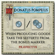 |
Donatus Pompeius | The player gets 1 sestertius if they produce in a cloth province, otherwise 2 sestertii. |
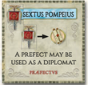 |
Sextus Pompeius | The player uses the Prefect to copy a face-up personality card of another player. |
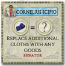 |
Cornelius Scipio | The player may buy a Consul by paying goods, such as 1 cloth and 2 bricks. |
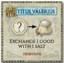 |
Titus Valerius | The player exchanges 1 good with 1 salt. |
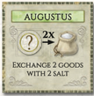 |
Augustus | The player exchanges 2 goods with 2 salt. |
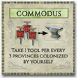 |
Commodus | The player exchanges 1 brick and 1 tool for 2 salt. |
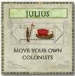 |
Julius | The player moves their own colonists. |
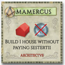 |
Mamercus | The player builds houses without paying sestertii. |
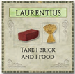 |
Laurentius | The player moves their colonists with as many movement steps as during an Architect action. |
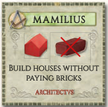 |
Mamilius | The player does not pay bricks for any houses built in this move. |
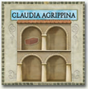 |
Claudia Agrippina | The player gets 4 extra storage spaces and 1 brick immediately. |
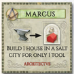 |
Marcus | The player builds 1 house in a Salt city for just 1 tool, saving wine and sestertii. |
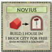 |
Novius | The player places a free house without needing an adjacent colonist or playing the Architect. |
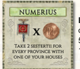 |
Numerius | The player gets 2 sestertii per province where they own houses. |
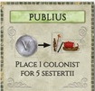 |
Publius | The player exchanges 1 good with 1 salt. |
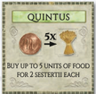 |
Quintus | The player may take 1 good of their choice from any province type that has not yet produced. |
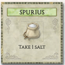 |
Spurius | The player gets 1 salt. |
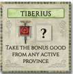 |
Tiberius | The player places a colonist in the Start City or in a city with one of their houses. |
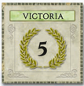 |
Victoria | The player gets 5 victory points at the end of the game. |
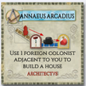 |
Annaeus Arcadius | The player may build one house per move using a foreign colonist. |
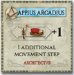 |
Appius Arcadius | The player gets one additional movement step when moving colonists. |
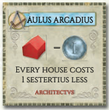 |
Aulus Arcadius | The player saves 1 sestertius when building, regardless of how many houses are already in the city. |
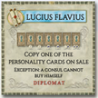 |
Lucius Flavius | If two Consuls are on sale, the player can copy one and buy the other. |
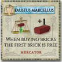 |
Faustus Marcellus | The player may buy 1 brick for free, but it counts as one of their two trade actions. |
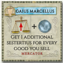 |
Gaius Marcellus | The player gets 1 extra sestertius per good sold when trading. |
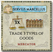 |
Servius Marcellus | The player may trade 3 types of goods instead of the normal 2. |
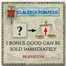 |
Claudius Pompeius | When using the Prefect, the player produces additional goods, such as 2 of a good instead of 1. |
Variants
The two scenarios are also playable without Salt cities. At first the game setup remains the same (with salt city tokens). The Salt cities are then exchanged with city tokens from the unused letter group:
- Salt city A becomes a tool city.
- Salt city B becomes a wine city.
- Salt city C becomes a cloth city.
- Salt city D becomes a brick city.
Some Forum cards bring Salt into play. Nevertheless it is possible to play with the Forum cards, but without the Salt expansion. Therefore the word “salt” changes to “any good” and “salt city” to “any city”.
Example 1: “TITUS VALERIUS” Exchange 1 good with any (other) good.
Example 2: “MARCUS” Build 1 house in any city for only 1 tool.
Icon Reference| Icon | Name | Description |
|---|---|---|
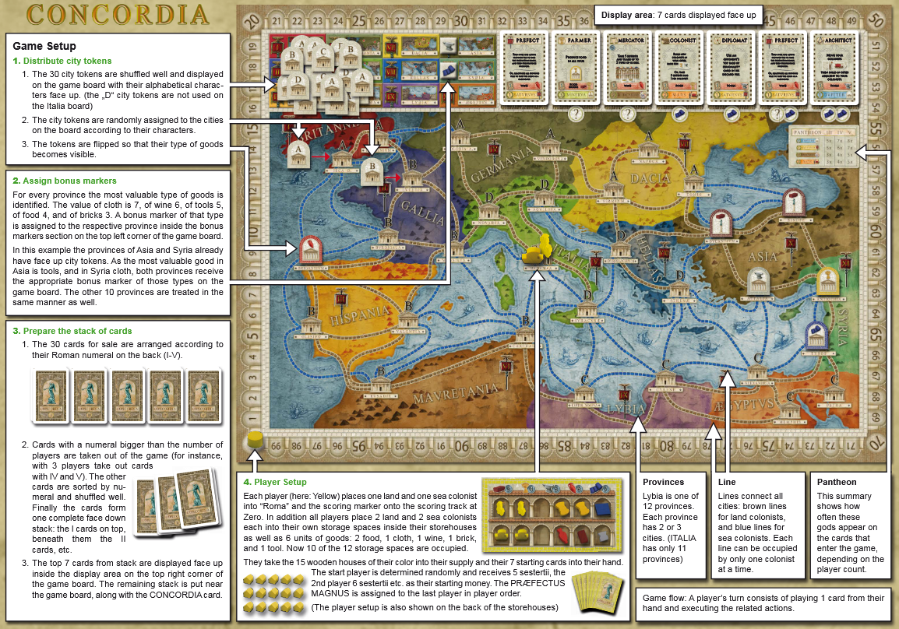 |
Setup | Setup represents the initial game preparation, including placing city tokens and bonus markers, preparing the card stack, and organizing player starting components. |
No sections match your search.